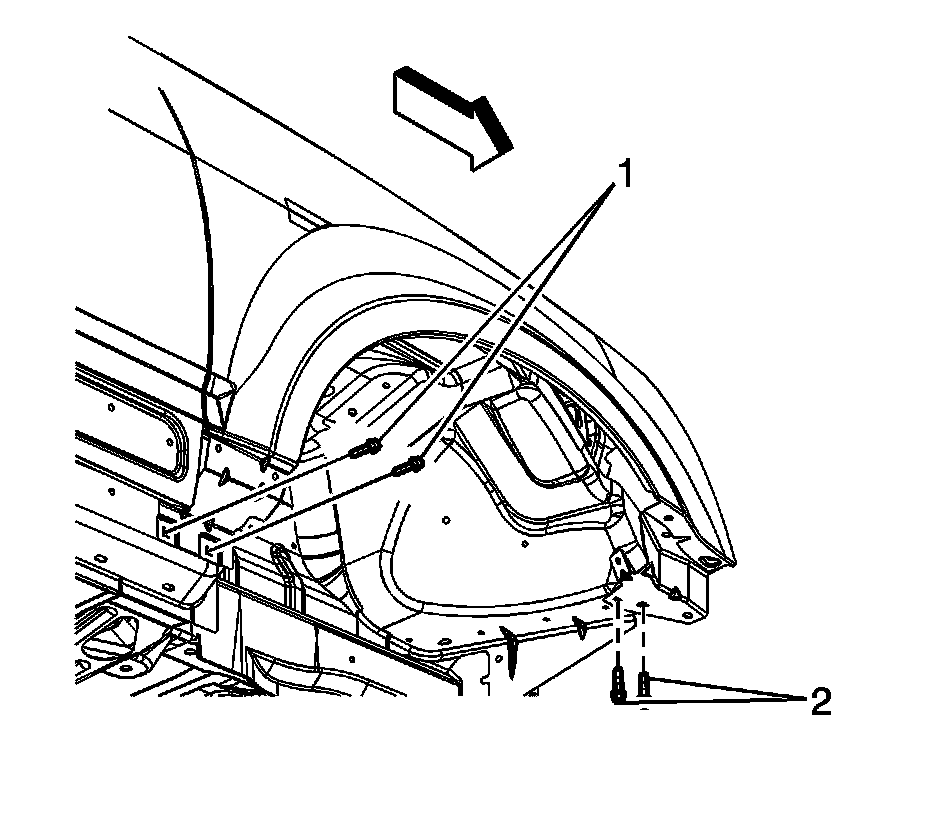
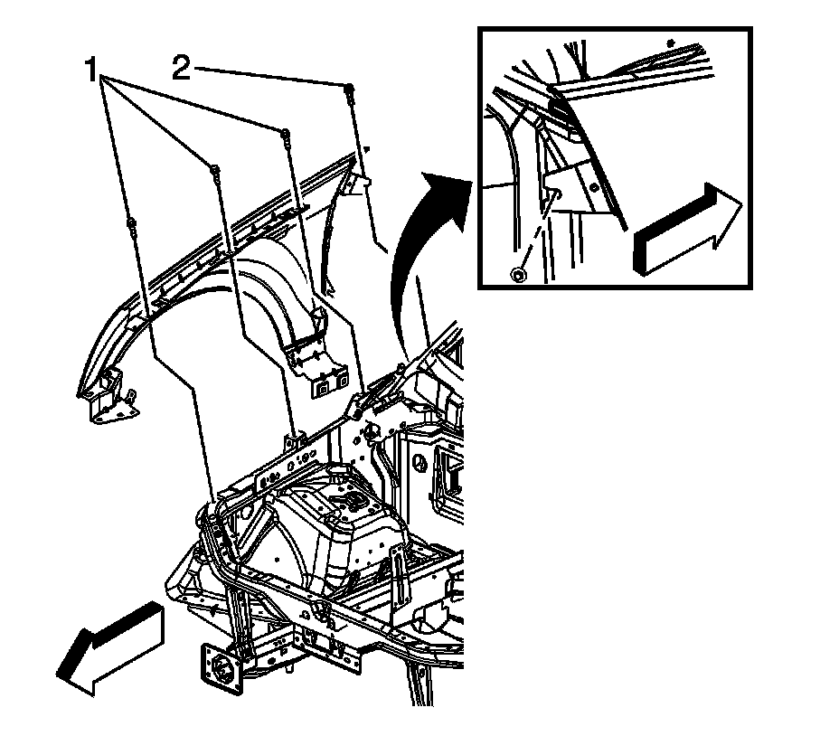
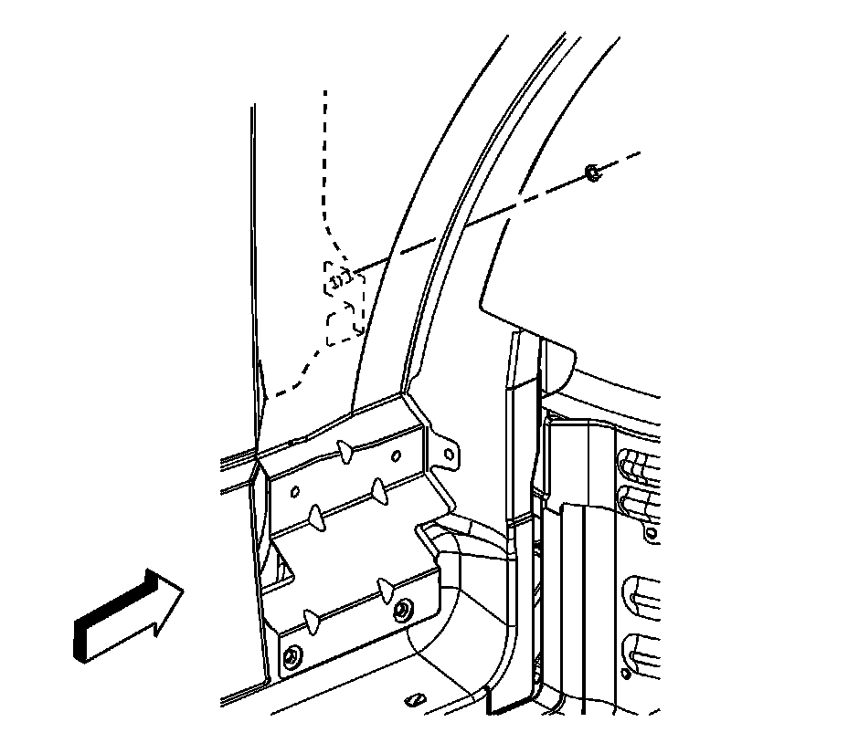

Front Fender Replacement
Front Fender Replacement
Removal Procedure
1. Apply tape to corners of panel and adjacent surfaces to help prevent paint damage.
2. Remove the front bumper fascia. Refer to Front Bumper Fascia Replacement (Front Bumper Fascia Replacement) .
3. Remove the headlamp. Refer to Headlamp Replacement (Service and Repair) .
4. Remove the hood. Refer to Hood Replacement (Service and Repair) .
5. Remove the front wheelhouse liner. Refer to Wheelhouse Panel Replacement - Right Side (Service and Repair) and Wheelhouse Panel Replacement - Left Side (Service and Repair) .
6. Remove the front section of the rocker panel molding. Refer to Rocker Panel Molding Replacement () .
7. Remove the front fender sound insulator. Refer to Front Fender Insulator Replacement (Service and Repair) .

8. Remove the bolts (1) securing the lower front portion of the front fender to the vehicle.
9. Remove the bolts (2) securing the lower rear portion of the front fender to the vehicle.

10. Remove the bolt (2) securing the upper rear portion of the front fender to the vehicle.

11. Loosen the bolt on the inside of fender to door pillar.
12. Remove shield from upper portion of fender by depressing tabs, battery side only.
Remove the bolts (1) securing the upper portion of the front fender to the vehicle.
13. Remove the front fender from the vehicle.
Installation Procedure
1. Position the front fender to the vehicle.
Notice: Refer to Fastener Notice (Fastener Notice) .
2. Install the bolts (1) in order to secure the upper portion of the front fender to the vehicle.
Tighten the bolts to 9 N.m (80 lb in).
3. Install the bolt (2) in order to secure the rear portion of the front fender to the vehicle.
Tighten the bolt to 9 N.m (80 lb in).
4. Install the bolts (2) in order to secure the lower rear portion of the front fender to the vehicle.
Tighten the bolts to 9 N.m (80 lb in).
5. Install the bolts (1) in order to secure the lower front portion of the front fender to the vehicle.
Tighten the bolt to 9 N.m (80 lb in).
6. Install the hood. Refer to Hood Replacement (Service and Repair) .
7. Install the front wheelhouse liner. Refer to Wheelhouse Panel Replacement - Right Side (Service and Repair) and Wheelhouse Panel Replacement - Left Side (Service and Repair) .
8. Install the rocker panel molding. Refer to Rocker Panel Molding Replacement () .
9. Install the headlamp. Refer to Headlamp Replacement (Service and Repair) .
10. Install the front fender sound insulator. Refer to Front Fender Insulator Replacement (Service and Repair) .
11. Remove the tape.